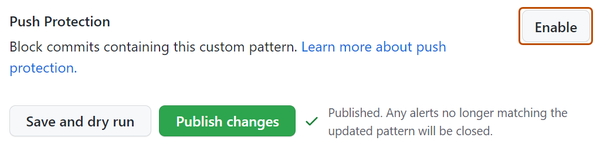
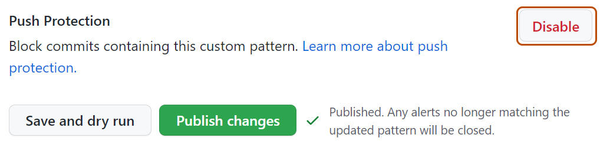

You can view, edit, and remove custom patterns, as well as enable push protection for custom patterns.
Custom patterns are user-defined patterns that you can use to identify secrets that are not detected by the default patterns supported by secret scanning. For more information, see Defining custom patterns for secret scanning.
At the enterprise level, only the creator of a custom pattern can edit the pattern, and use it in a dry run. There are no similar restrictions for editing custom patterns at repository and organization level.
Editing a custom pattern
When you save a change to a custom pattern, this closes all the secret scanning alerts that were created using the previous version of the pattern.
Navigate to where the custom pattern was created. A custom pattern can be created in a repository, organization, or enterprise account.
Under "Custom patterns", to the right of the custom pattern you want to edit, click .
When you're ready to test your edited custom pattern, to identify matches without creating alerts, click Save and dry run.
When you have reviewed and tested your changes, click Publish changes.
Optionally, to enable push protection for your custom pattern, click Enable.
Note
Push protection for custom patterns will only apply to repositories that have secret scanning as push protection enabled. For more information about enabling push protection, see About push protection.
Enabling push protection for commonly found custom patterns can be disruptive to contributors.

Optionally, to disable push protection for your custom pattern, click Disable.

Removing a custom pattern
When you remove a custom pattern, GitHub gives you the option to close the secret scanning alerts relating to the pattern, or keep these alerts.
Navigate to where the custom pattern was created. A custom pattern can be created in a repository, organization, or enterprise account.
To the right of the custom pattern you want to remove, click .
Review the confirmation, and select a method for dealing with any open alerts relating to the custom pattern.
Click Yes, delete this pattern.
If you choose to close the alerts when removing a custom pattern, you need to be aware that the deletion process happens asynchronously in the background. For custom patterns that have generated a high volume of alerts (thousands or more), the deletion process may take several minutes to hours to complete. You can continue working while the process completes.
Enabling push protection for a custom pattern
You can enable secret scanning as a push protection for custom patterns stored at the enterprise, organization, or repository level.
Enabling push protection for a custom pattern stored in an enterprise
Note
To enable push protection for custom patterns, secret scanning as push protection needs to be enabled at the enterprise level.
Enabling push protection for commonly found custom patterns can be disruptive to contributors.
Before enabling push protection for a custom pattern at enterprise level, you must also test your custom patterns using dry runs. You can only perform a dry run on repositories that you have administration access to. If an enterprise owner wants access to perform dry runs on any repository in an organization, they must be assigned the organization owner role. For more information, see Managing your role in an organization owned by your enterprise.
Navigate to your enterprise. For example, from the Enterprises page on GitHub.com.
At the top of the page, click Policies.
Under "Policies", click Advanced SecurityCode security.
Under "Advanced SecurityCode security", click Security features.
Under "Secret scanning", under "Custom patterns", click for the pattern of interest.
Note
At the enterprise level, you can only edit and enable push protection for custom patterns that you created.
To enable push protection for your custom pattern, scroll down to "Push Protection", and click Enable.
Note
The option to enable push protection is visible for published patterns only.
Enabling secret scanning as a push protection in an organization for a custom pattern
Before enabling push protection for a custom pattern at organization level, you must ensure that you enable secret scanning for the repositories that you want to scan in your organization. To enable secret scanning on all repositories in your organization, see Managing security and analysis settings for your organization.
In the upper-right corner of GitHub, click your profile picture, then click Organizations.
Select an organization by clicking on it.
Under your organization name, click Settings. If you cannot see the "Settings" tab, select the dropdown menu, then click Settings.
In the "Security" section of the sidebar, select the Advanced Security dropdown menu, then click Global settings.
Under "Custom patterns", click for the pattern of interest.
To enable push protection for your custom pattern, scroll down to "Push Protection", and click Enable.
Note
The option to enable push protection is visible for published patterns only.
Push protection for custom patterns will only apply to repositories in your organization that have secret scanning as push protection enabled.
Enabling push protection for commonly found custom patterns can be disruptive to contributors.
Enabling secret scanning as a push protection in a repository for a custom pattern
Before enabling push protection for a custom pattern at repository level, you must define the custom pattern for the repository, and test it in the repository. For more information, see Defining custom patterns for secret scanning.
On GitHub, navigate to the main page of the repository.
Under your repository name, click Settings. If you cannot see the "Settings" tab, select the dropdown menu, then click Settings.
In the "Security" section of the sidebar, click Advanced Security.
Under "Secret Protection", under "Custom patterns", click for the pattern of interest.
To enable push protection for your custom pattern, scroll down to "Push Protection", and click Enable.
Note
The option to enable push protection is visible for published patterns only.